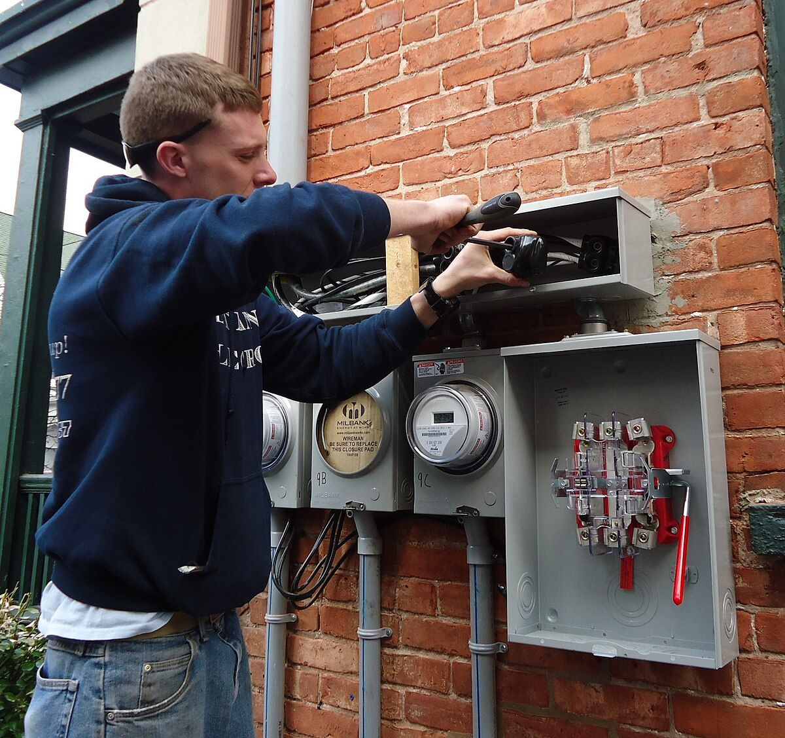
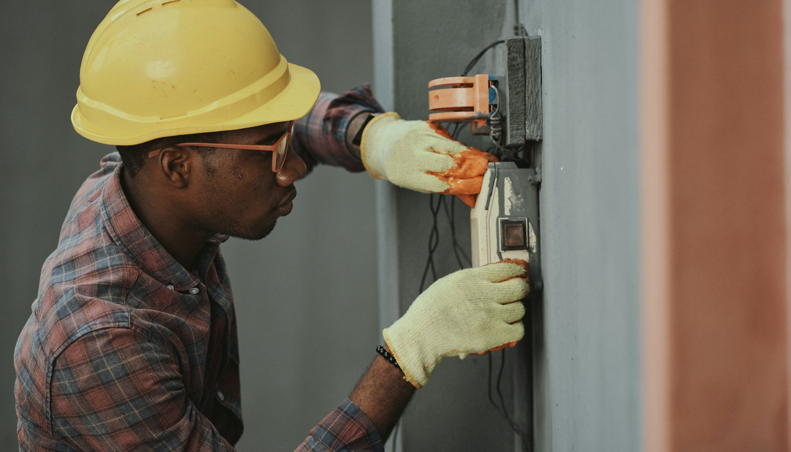
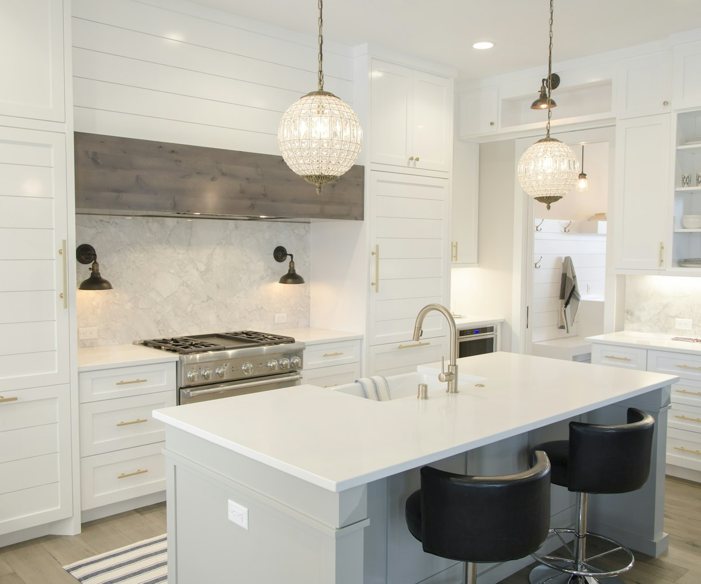
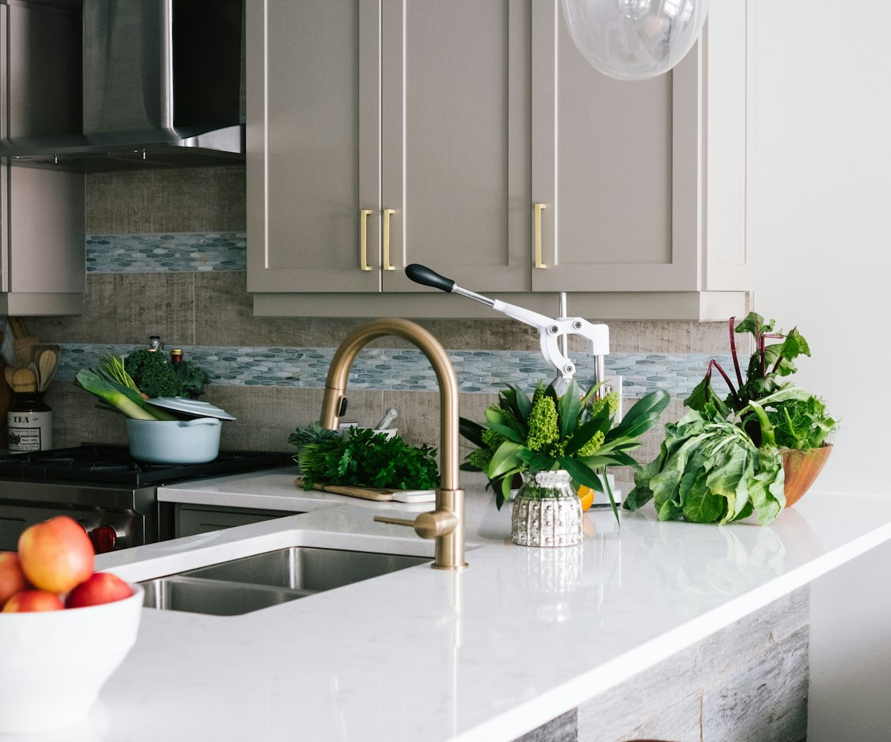
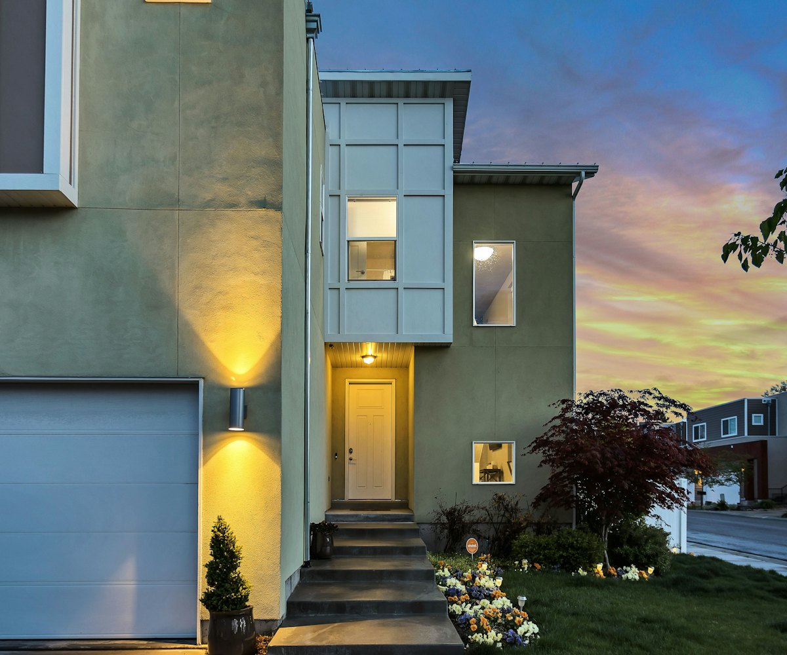

01Hitne
intervencije
Ponovno uspostavljanje električnog napajanja i otklanjanje kvara – majstor izlazi odmah po prijemu poziva, 24 sata dnevno.
Pozovite odmah
Električar Beograd dolazi u roku od 1 sat na sve lokacije u Beogradu i okolini – zamena osigurača, popravka bojlera, servis šporeta i povratak struje.
Dolazimo na sve lokacije u Beogradu i okolini
Ciljana dijagnostika sa preciznim opisom gde je električni kvar, koncizan predlog daljih aktivnosti i promptna realizacija na celoj teritoriji Beograda.
Brza usluga bez „razvlačenja“. Popravku sprovodimo odmah, na licu mesta.
Jasna konstatacija bez „fingiranja“. Nema priče da je kvar „jako komplikovan i skup“ – kažemo tačno šta je problem.
Promptna usluga bez „odlaganja danima“. Dolazimo na adresu u roku od 1 sat, bez obzira na obim posla.


Bez struje nema ni svetla, ni grejanja, ni tople vode. Zato Električar Beograd radi kao dežurna služba – majstor izlazi na lice mesta odmah po prijemu poziva, a popravka struje je moguća 24 sata dnevno, 7 dana u nedelji, 365 dana u godini.
Ako ste ostali bez struje, pozovite nas prvo. Pronaći ćemo kvar, otkloniti ga i vratiti napajanje – brzo, uredno i bezbedno.
Hitne intervencije za grad Beograd i kvalitetne električarske usluge, popravke električnih uređaja i električnih instalacija. Odlikuje nas profesionalan pristup, tržišne cene i garancija na sve usluge.
Tim čine iskusni i obučeni električari koji posvećuju pažnju svakoj popravci, urednosti i sa strpljenjem sprovode električarske usluge – na Novom Beogradu, Zemunu, Voždovcu, Zvezdari i svuda u gradu. Za strance koji borave u Srbiji odgovaramo i na engleskom jeziku (Electrician Belgrade).
Svaka popravka uređaja jake ili slabe struje mora se sprovesti u skladu sa elektrotehničkim pravilima. Fazni provodnik označava se braon, crnom, sivom ili crvenom bojom, nulti provodnik plavom, a zaštitni provodnik (uzemljenje) žuto-zelenom bojom.
Pažnja: nikada ne „krpite“ topljivi osigurač tankim žicama. Ne zna se na kojoj jačini struje će takav osigurač pregoreti, a nedostaje i kvarcni pesak koji „hvata“ električni luk. Pozovite električara.

Majstori Električar Beograd su tim odgovoran za celokupnu teritoriju Beograda – od Zemuna i Novog Beograda do Voždovca, Zvezdare i okoline.
Banovo Brdo · Banjica · Batajnica · Bežanijska Kosa · Borča · Cerak · Dedinje · Dorćol · Galenika · Kaluđerica · Karaburma · Konjarnik · Košutnjak · Krnjača · Kumodraž · Ledine · Miljakovac · Mirijevo · Resnik · Senjak · Vidikovac · Vinča · Višnjička Banja · Žarkovo · Železnik · Zemun Polje
„Bojler mi crkao za vikend i već sam bila u strahu šta da radim. Želim da se zahvalim majstoru za extra brz dolazak i popravku. Svaka preporuka od srca.“
Pogledaj na Google mapama„Došli kad su rekli, završili posao profesionalno.“
Pogledaj na Google mapama„Najbolji majstori u Beogradu, svaka preporuka za električare.“
Pogledaj na Google mapama„Svaka preporuka za saradnju. Sve uredno i nivo rada vrhunski.“
Pogledaj na Google mapama„Električar firme je došao i sproveo mi je kabal za televizor kroz stan do televizora. Pošto sam nešto starija, imam televizor sa čitačem kartica kodova, i majstor mi je sve namestio da radi kako treba. Da budem iskrena, čak je napolju sada 38°C, a čovek je došao, rešio mi stvar i otišao, nije ni vode tražio. Tek sad sam se setila da ga nisam ni ponudila, pošto je bio baš brz.“
Pogledaj na Google mapamaIz opširne ponude izdvajamo zahteve sa kojima nam se korisnici najčešće obraćaju.
Imate drugo pitanje?061/668-65-96Osigurač je predviđen da bude najslabija karika u lancu napajanja i da štiti instalaciju. Kada se na istu fazu istovremeno uključe veliki potrošači – na primer fen i veš mašina, ili TA peć i grejalica na istoj utičnici – dolazi do „iskakanja“ automatskog ili pregorevanja topljivog osigurača.
Najčešći uzrok je grejač koji je pregoreo usled galvanske korozije i nataloženog kamenca. Kvar je često i u termostatu – bojler ima regulacioni i sigurnosni termostat. Prilikom popravke preporučujemo i zamenu sigurnosnog ventila koji reguliše pritisak vode.
Kvar vrlo često leži u grejaču rerne ili pregorelom kablu. Ako dijagnostika pokaže da treba zameniti termostat, prekidač ili ringlu, kvar otklanjamo odmah i proveravamo da li je potrebna montaža trofazne utičnice radi ravnomernog opterećenja faza.
Najčešći uzroci su pregoreli grejač i otkaz termostata. Grejač koji zagreva šamotne blokove izložen je visokim temperaturama, a pri kvaru često istovremeno pregori i topljivi osigurač u razvodnoj tabli.
Monofazna mreža ima jednu fazu, nulti i zaštitni provodnik (uzemljenje). Trofazna koristi tri faze, označene slovima R, S i T, dok su nula i uzemljenje isti kao kod monofaznog sistema. Napon je danas 230/240 V kod monofazne i 400 V kod trofazne mreže.
Pozovite nas – majstor izlazi na lice mesta odmah po prijemu poziva.